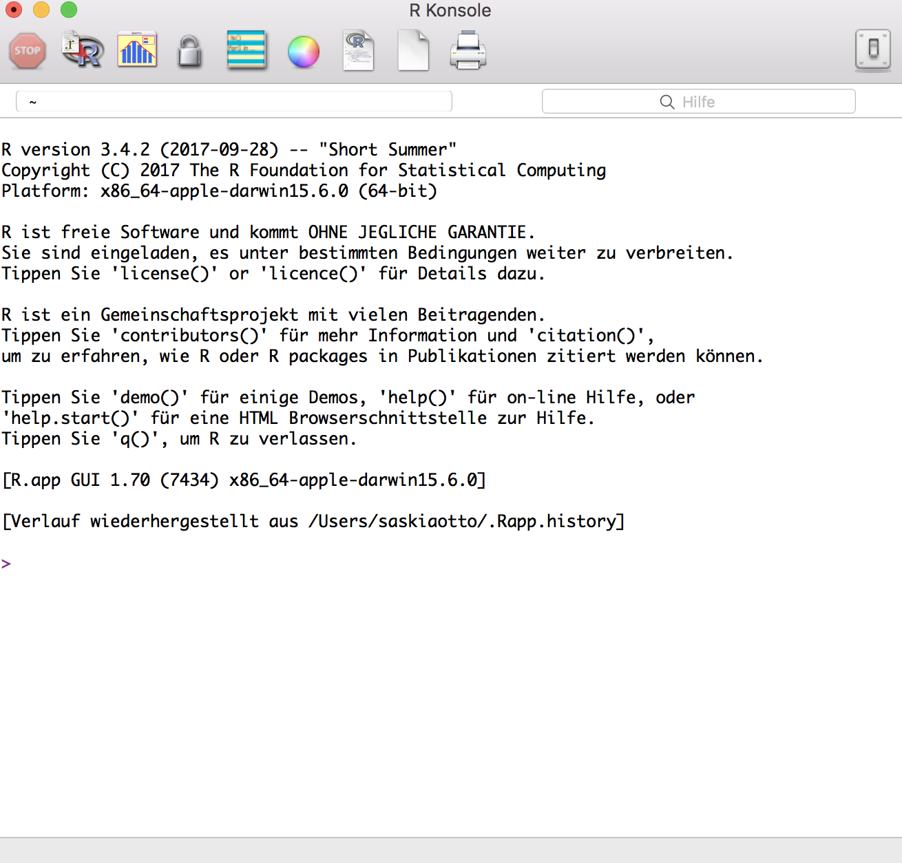
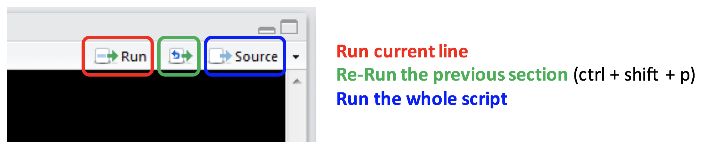
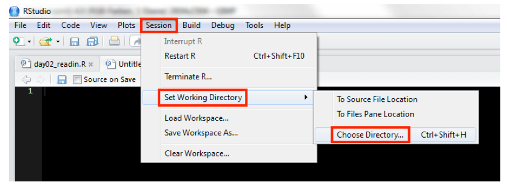
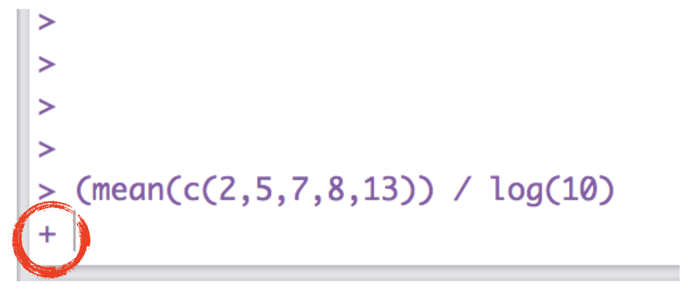
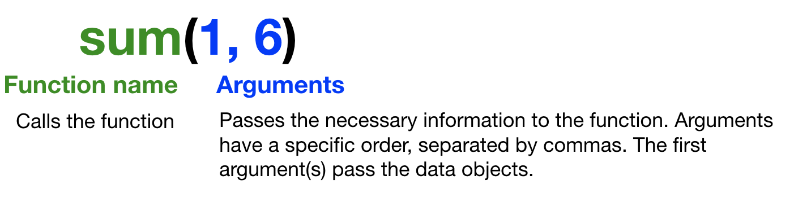
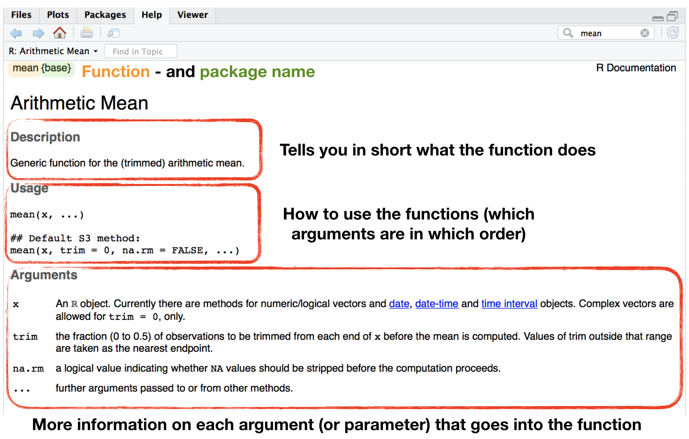
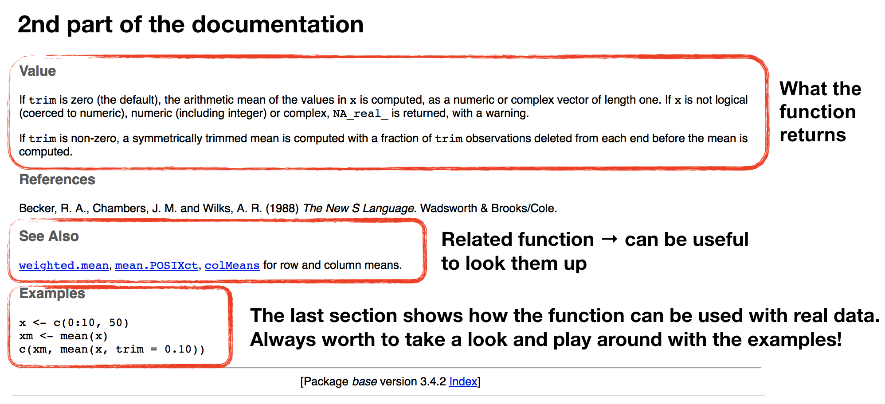

Data Analysis with R
1 - Introduction to data science and R
Saskia A. Otto
Postdoctoral Researcher
What is 'Data Analysis' or 'Data Science'?
Data science is
- all about uncovering findings from data. Diving in at a granular level to mine and understand complex behaviors, trends, and inferences.
Data science is
- all about uncovering findings from data. Diving in at a granular level to mine and understand complex behaviors, trends, and inferences.
How do data scientists mine out insights?
- It starts with data exploration.
- When given a challenging question, data scientists become detectives and investigate leads and try to understand patterns within the data.
- Data scientists may apply quantitative technique in order to get a level deeper → e.g. inferential models, segmentation analysis, time series forecasting, synthetic control experiments, etc.
- The intent is to scientifically piece together a forensic view of what the data is really saying.
- THATS WHY IT IS SO EXCITING!

Screenshot of Harvard Business Review website, taken November 11, 2017.
Data science is a blend of skills in three major areas:

You will learn in this course:

Intro to the R environment

What is R?
R is a programming language


"R is a system for statistical computation and graphics. It is a GNU project which is similar to the S language and environment which was developed at Bell Laboratories by John Chambers and colleagues. R can be considered as a different implementation of S…..R is available as Free Software under the terms of the Free Software Foundation’s GNU General Public License in source code form. It compiles and runs on a wide variety of UNIX platforms, Windows and MacOS."
(from http://r-project.org/)
Why use R?

Where do you get R?
Directly from the website https://cran.r-project.org

Use R from within

- A software program, which provides a GUI for R (trademark of RStudio, Inc.)
- Helps writing and executing R code and analyzing data with R.
- Integrated text editor and data and package manager.
- Provides version control, LaTeX integration, keyboard shortcuts, and debugging tools.
- Has become standard amongst R users.
- Open source and commercial editions available: www.rstudio.com
- Runs on desktops (Windows, Mac, and Linux) or in a web browser connected to RStudio Server → We will use R Studio Server during the course!


Advantages of writing scripts
- Transparency and reproducibility - Not only the results but each step of the analysis are visible.
- Flexibility - Some analyses need only a few code tweaks of an existing R script.
- Exchange - In theory every R user should understand your script to allow easy sharing of code.
Work with scripts in R Studio
- Open a new script (File ➔ New File ➔ R Script)
- Write code into the empty script (in the editor pane)
- Send the code to the R console:
- mark the code chunk and copy and paste it into the console (NOT recommended!)
- press ctrl + enter ➔ code of current line (where the cursor is) is executed; cursor jumps then automatically to the next line of code
- mark the code chunk ➔ ctrl + enter ➔ entire code chunk is executed

Style guide - Some general recommendations
- Use a style guide and stick to it.
- Every script should be as small as possible and as complex as needed.
- Every script should be run by the console from start to end without any error messages.
- Use "#" to comment your code.
- Comment why you do something, not what you do.
- Never use
attach(). - Assignment operator:
<-(do not use "=")
Style guide - Object names
- Variable names should be nouns and function names should be verbs.
- Object names cannot begin with numbers.
- Don't uses special characters (e.g. !,/,%)
- Wise to avoid names already in use (for functions).
- Use lowercase
- Do not use empty spaces in names, instead combine with underscore.
- Ok to use:
- a, x, my_list, my_dat, dat1
- Not recommended:
- 1_a, c, list, _mydat, $dat
Style guide - Spacing
Put a space
- before and after all infix operators (=, +, -, <-, etc.)
- when naming arguments in function calls
- after a comma, but never before
Before you start: set the working directory

Better: Use R Projects

R Projects (cont)
New folder stucture

Advantages of projects
- Pre-defined folder structure
- Working directory is set automatically
- All scripts in this projects are immediately available
- Opens a new R instance so that one can switch between several instances
Arithmetics and functions in R
Basic calculations
In its most basic form, R can be used as a simple calculator.

Basic calculations
Consider the following arithmetic operators:
- Addition:
+ - Subtraction:
- - Multiplication:
* - Division:
/ - Exponentiation:
^
Basic calculations
Consider the following arithmetic operators:
- Addition:
+ - Subtraction:
- - Multiplication:
* - Division:
/ - Exponentiation:
^
5 + 5
5 - 5
3 * 5 + 2
(5 + 5) / 2
Basic calculations
Consider the following arithmetic operators:
- Addition:
+ - Subtraction:
- - Multiplication:
* - Division:
/ - Exponentiation:
^
5 + 5
## [1] 10
5 - 5
## [1] 0
3 * 5 + 2 # multipl. then add.
## [1] 17
(5 + 5) / 2 # add. then div.
## [1] 5
Basic calculations (cont)
It also has functions that let you do more sophisticated manipulations, which you can combine by using parentheses:
a <- c(1,2,3,4)
c <- (a + sqrt(a))/(exp(2)+1)
Basic calculations (cont)
It also has functions that let you do more sophisticated manipulations, which you can combine by using parentheses:
a <- c(1,2,3,4)
c <- (a + sqrt(a))/(exp(2)+1)
Order of calculations (from the innermost to outermost parenthesis - just like a calculator).
sqrt(a)andexp(2)- then
aadded tosqrt(a)and1added toexp(2) - then the division
(sqrt = square root, exp = exponent)
+ prompt

If your prompt turns into a "+", R thinks you haven't finished your previous command. Either finish the command, or press escape.
A short introduction to functions in R
- Functions are the heart and soul of R.
- A function is a block of code that gives instructions to R to carry out.
- Some functions come in R's base package others in additional packages.
- They work similar to functions in other packages:
A short introduction to functions in R
- Functions are the heart and soul of R.
- A function is a block of code that gives instructions to R to carry out.
- Some functions come in R's base package others in additional packages.
- They work similar to functions in other packages:
- in Excel, to sum up over cells A1 to A10 you write sum(A1:A23).
- in R there is an equivalent function named
sum(), which takes the elements it should sum over as argument:

Getting help
Getting help for a specific function:
help("mean")
?mean
Search the help pages:
??mean
help.search("mean")
List all functions, which contain "mean":
apropos("mean")
R Documentation for the function mean

R Documentation for the function mean

Your turn...
Quiz 1: Simple calculations
Open a new script in your R Studio Server environment and save it before you start writing anything. Now calculate the following and write the result in the boxes below:
- Substract 10 from 23, then multiply with 2.
- Substract 10 from 23, then multiply with 2, then add 100, then divide all by 5.
- Substract 23 from 10, then multiply with -10, then take the square root (use
sqrt()function).
R calculates first * and / before + and - operations. To change the order wrap the respective parts in parentheses!
1.The substraction needs to be in parenthesis otherwise 10 is multiplied with 2 first: ((23 - 10) * 2
2.Wrap now everything in brackets (parentheses) before you divide by 5:
((23 - 10) * 2 + 100) / 5
3.The sqrt()function comes last and wraps everything else up, that means you write all other calculations inside the function:
sqrt((10 - 23) * -10) or you use 2 steps:
x <- (10 - 23) * -10) and then sqrt(x)
- 26
- 25.2
- 11.4017543
Thank You
For more information contact me: saskia.otto@uni-hamburg.de
http://www.researchgate.net/profile/Saskia_Otto
http://www.github.com/saskiaotto

This work is licensed under a
Creative Commons Attribution-ShareAlike 4.0 International License except for the
borrowed and mentioned with proper source: statements.
Image on title and end slide: Section of an infrared satallite image showing the Larsen C
ice shelf on the Antarctic
Peninsula - USGS/NASA Landsat:
A Crack of Light in the Polar Dark, Landsat 8 - TIRS, June 17, 2017
(under CC0 license)